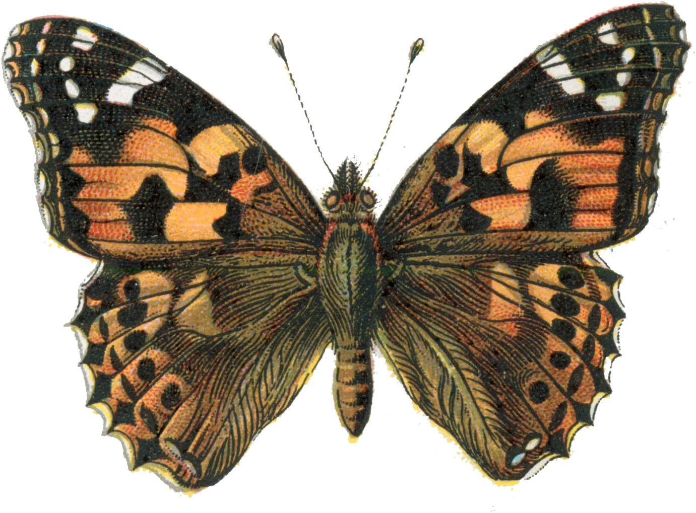

01

Painted Lady
Vanessa cardui · Nymphalidae
The single most abundant butterfly in Israeli surveys, and one of the most widespread insects on Earth. A long-distance migrant, it breeds continuously across the Mediterranean and moves north and south with the seasons. Orange-brown above with black-and-white tips; an underside mosaic of browns and whites. Caterpillars favour thistles and mallows.